Lasciate ogni speranza, voi ch'entrate

Enter
Rules:
- Don't look beyond what you can see, the source is evil
- You'll find guidance in the terminals proceeding each level
- You won't need to look for guidance anywhere else
- Turn on autoplay in your browser - it's just for mood though
- The format of all answers is '/answer.html'